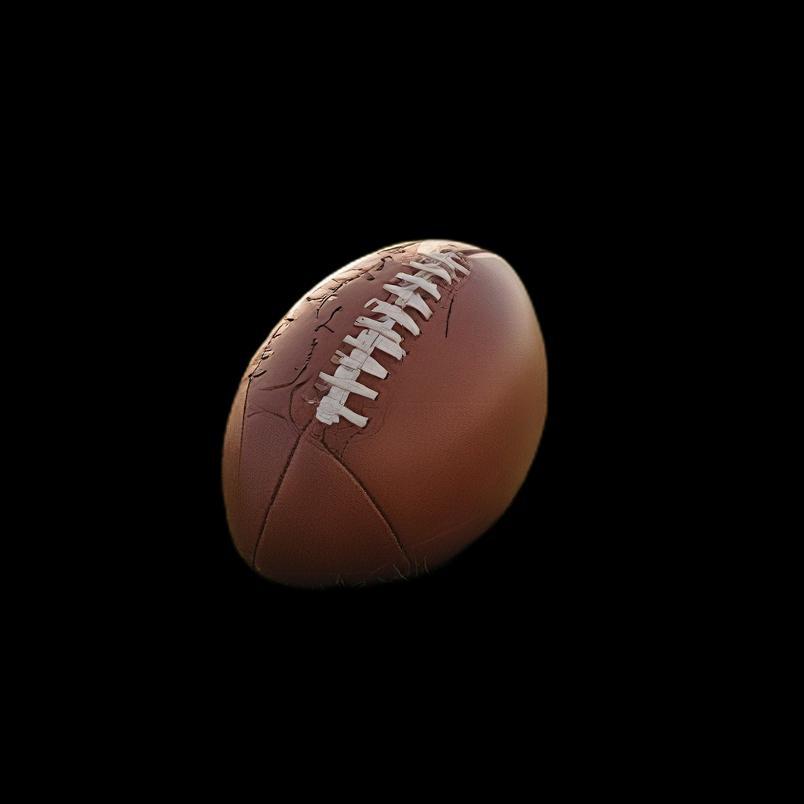

प्रेरणा:
"यस वस्तुलाई विभिन्न दृष्टिकोणबाट देखाउनुहोस्"
परिणाम:
AiCasso मा बहु दृश्य विशेषता तपाईंलाई वस्तुलाई विभिन्न कोणबाट हेर्न अनुमति दिन्छ, जसले तपाईंको छविमा वस्तुको धेरै दृष्टिकोण उत्पन्न गर्दछ। यो विशेषता 3D आकारहरूको राम्रो बुझाइ प्राप्त गर्न वा उत्पादनहरू प्रदर्शन गर्न विशेष रूपमा उपयोगी छ। यो विशेषता तब राम्रोसँग काम गर्दछ जब वस्तुको पृष्ठभूमि हुँदैन, त्यसैले उत्तम परिणामको लागि कुनै पनि ध्यान भंग गर्ने तत्वहरू हटाउन सुनिश्चित गर्नुहोस्।
"यस वस्तुलाई विभिन्न दृष्टिकोणबाट देखाउनुहोस्"
परिणाम:
यहाँ तपाईंको छवि उत्कृष्ट बनाउनका लागि केही सुझावहरू छन्:
AiCasso का सबै विशेषताहरू जस्तै, तपाईंलाई यसलाई धेरै सोच्न आवश्यक छैन—तपाईंले के चाहनुहुन्छ वर्णन गर्नुहोस् र AiCasso ले कठिन काम गर्नेछ। बहु दृश्य विशेषता उत्पादन प्रदर्शन, रचनात्मक प्रदर्शन, र थपका लागि उत्तम छ!